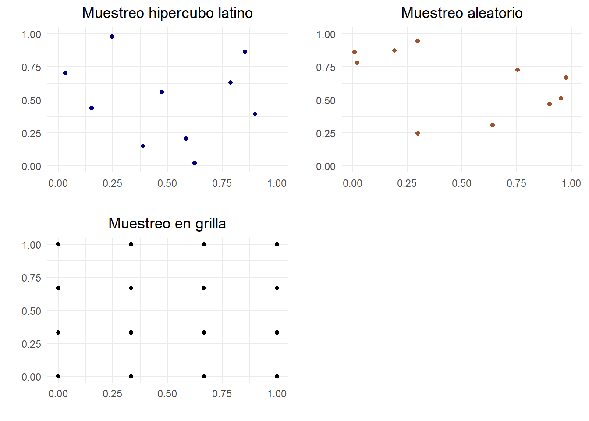
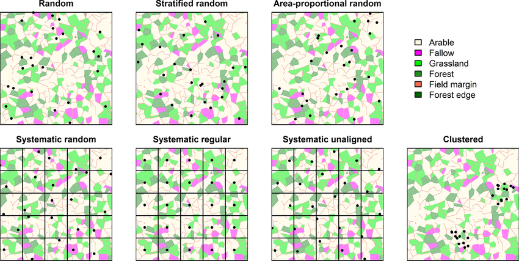
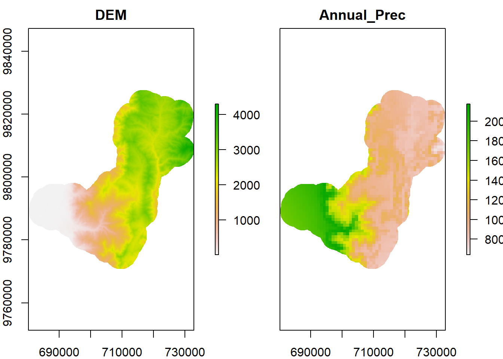
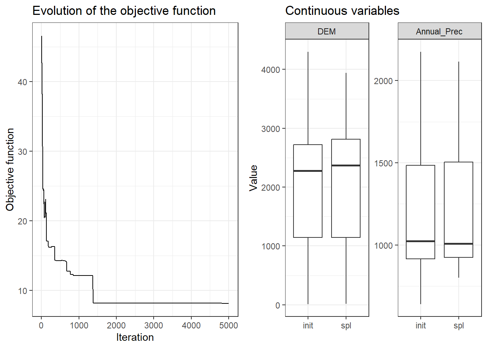
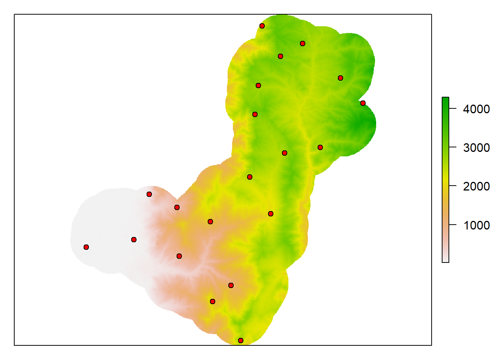
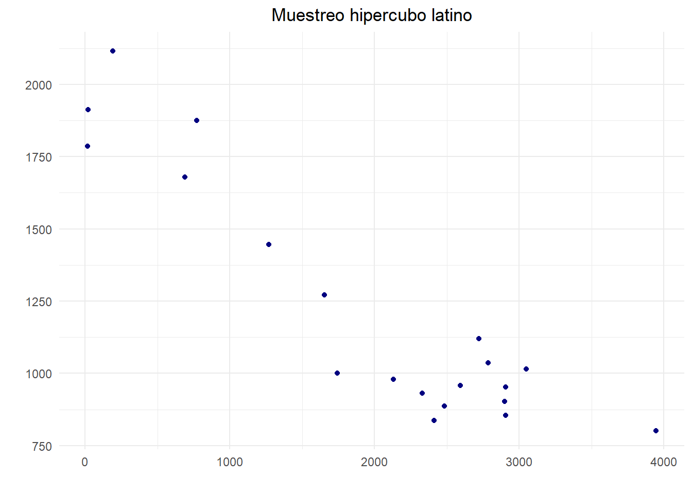

Warning: package 'lhs' was built under R version 4.4.3Warning: package 'ggplot2' was built under R version 4.4.3
Cuando se realiza muestreo se busca obtener datos que permitan estimar algún parámetro estadístico, o predicciones espaciales de algunas propiedades sobre un área. El muestreo está limitado por los objetivos que tiene el proyecto y los recursos financieros y disponibles, por lo que se busca una estrategia de muestreo eficiente. Por lo que en el estudio de suelos para mapeo se busca establecer sitios que optimicen la recolección de los datos.
Para el DSM los estudios del suelo y de las demás variables de interés que están en la superficie terrestre, se pueden planificar de manera óptima respecto al uso de la información que ha sido colectada en varios lugares. Se recomienda utilizar el muestreo de hipercubo latino condicionado (cLHS), que permite explorar de manera eficiente el espacio de búsqueda multidimensional de variables continuas (McKay et al., 1979).
El muestreo puede estar guiado por la presencia de datos auxiliares o información secundaria que se ha recolectado previamente. Los mapas de mediciones geofísicas, imágenes de sensores remotos, mapas de vegetación, mapas geológicos, modelos digitales de elevación (DEM) y sus atributos del terreno, son ejemplos de datos auxiliares. (Goovaerts, 1997)
El muestreo estratificado es una técnica de muestreo probabilístico que se utiliza para obtener una representación más precisa de la variabilidad espacial de las propiedades del suelo en un área determinada. En comparación con el muestreo aleatorio simple, el muestreo estratificado permite distribuir las muestras de manera más uniforme en diferentes estratos o subgrupos del área de estudio, asegurando una mejor cobertura de la variabilidad presente.

El hipercubo latino condicionado (cHL, por sus siglas en inglés) se utiliza para obtener muestras en áreas que tienen una gran cantidad de información en los datos auxiliares. Donde se proporcionan n sitios con información multidimensional, selecciona una muestra que a su vez represente todos los intervalos de clase de las distribuciones marginales que componen la distribución multivariada. (Kurina et al. , 2016)
Dentro de las ventajas que ofrece esta técnica de muestreo, se encuentra que:
Se pueden incorporar tanto variables continuas como categóricas.
Se puede incorporar coordenadas espaciales, lo que garantiza una buena distribución de los puntos de muestreo.
Se pueden imponer restricciones adicionales a la función objetivo, por ejemplo, distancia de las carreteras y límites del campo.
El muestreo en grilla, también conocido como muestreo regular o sistemático en grilla, es una técnica de muestreo probabilístico que consiste en dividir el área de estudio en una red regular de celdas o puntos de muestreo. Es útil para recolectar datos espaciales cuando se requiere una cobertura uniforme y sistemática del área de estudio.
Este modelo es relativamente sencillo de implementar y no requiere de un conocimiento previo complejo del área de estudio. Sin embargo, puede no ser eficiente en áreas heterogéneas debido a que la distribución espacial de las variables es muy heterogénea.
Por otra parte, este método no considera la variabilidad espacial y esto lo vuelve un modelo inflexible y no adaptarse a la forma o características del área de estudio.
El muestreo aleatorio es una técnica fundamental en estadística que permite obtener una muestra representativa de una población más grande. La principal característica del muestreo aleatorio es que cada individuo de la población tiene la misma probabilidad de ser seleccionado, lo que garantiza que la muestra no esté sesgada y refleje fielmente las características de la población.
Dentro de las ventajas de este muestreo está su facilidad de implementación,debido a que es un módelo que utiliza un bajo nivel de procesamiento y el tiempo de respuesta es rápido.
Algunas de las desventajas del muestreo aleatorio pueden ser su costo,requiere un marco muestral completo que contenga una lista de todas las variables del conjunto de datos y en algunos casos, puede ser imposible seleccionar una muestra aleatoria de la población, por ejemplo, cuando la población es muy grande o inaccesible.
Warning: package 'lhs' was built under R version 4.4.3Warning: package 'ggplot2' was built under R version 4.4.3
Librerías
Antes de identificar el área objetivo y colectar datos auxiliares (covariables) , se recomienda cargar todas las librerías que se usarán.
library(sf)Linking to GEOS 3.13.0, GDAL 3.10.1, PROJ 9.5.1; sf_use_s2() is TRUElibrary(raster)Loading required package: splibrary(clhs)Se cargan las covariables en formato ráster, deben tener la misma extensión y resolución:
lista_raster= list.files(path = "datos/covariables", pattern = ".tif", full.names = TRUE)Se concatenan en una pila de ráster, todas las capas cargadas y se les asigna un nombre:
stack = stack(lista_raster)
stack= stack[[c("DEM","Annual_Prec")]]
plot(stack)
Ahora se convierte la pila de ráster en un SpatialPointsDataFrame en este proceso, cada píxel se convierte en una fila dentro de un dataframe:
s = rasterToPoints(stack, spatial=TRUE)Se aplica la función cLHS a toda la pila de ráster, este proceso puede tomar bastante tiempo esto dependerá del tamaño de los archivos:
s_clhs = clhs(s, size = 20, progress = FALSE, iter = 5000, simple = FALSE, use.coords = TRUE)Se pueden obtener los gráficos de diagnóstico, donde se ilustra el resultado del procedimiento del muestreo:
plot(s_clhs, mode=c("obj", "box"))Warning: `aes_string()` was deprecated in ggplot2 3.0.0.
ℹ Please use tidy evaluation idioms with `aes()`.
ℹ See also `vignette("ggplot2-in-packages")` for more information.
ℹ The deprecated feature was likely used in the clhs package.
Please report the issue at <https://github.com/pierreroudier/clhs/issues>.
Se extraen los índices:
subset_idx <- s_clhs$index_samplesFinalmente se trazan los puntos dentro del área de estudio:
par(mar = c(1,1,1,1))
plot(stack$DEM, axes=FALSE)
points(s[subset_idx, ], bg = 'red', pch=21)
f = cbind(data.frame(A = s_clhs$sampled_data$DEM, B = s_clhs$sampled_data$Annual_Prec))
# Gráfico de muestreo hipercubo latino
plot2 <- ggplot(f , aes(x = A, y = B)) +
geom_point(color = "navy") +
labs(title = "Muestreo hipercubo latino", x = "", y = "") +
theme_minimal() +
theme(plot.title = element_text(hjust = 0.5))
plot2
Se recomienda utilizar este tipo de muestreo porque permite una exploración más completa y eficiente de los distintos parámetros en comparación con los demás métodos. Además, al garantizar que los puntos estén bien distribuidos en todo el espacio de parámetros, se tendrán resultados más robustos y representativos.
El proceso de muestreo de suelos, colección de datos en campo y análisis de laboratorio es crucial para obtener información precisa sobre la salud y fertilidad del suelo. Esta información es esencial para tomar decisiones informadas sobre el manejo del suelo, la fertilización y las prácticas agrícolas.
Muestreo de suelos
El primer paso es realizar un muestreo adecuado del suelo. Esto implica tomar muestras de suelo en diferentes puntos del área de estudio, de manera que representen las características del suelo en general. La profundidad, la cantidad y la distribución de las muestras dependerán del objetivo del estudio y las características del suelo. Existen diferentes métodos de muestreo de suelos, entre los más comunes se encuentra el muestreo al azar simple, muestreo en cuadrícula, muestreo estratificado, entre otros.
-01.png)
Colección de datos en campo
Además de tomar muestras de suelo, también es importante recopilar otros datos en campo, como:
Análisis de laboratorio
Las muestras de suelo se envían al laboratorio para su análisis. En el laboratorio, se realizan una serie de pruebas para determinar las propiedades físicas, químicas y biológicas del suelo. Algunas de las pruebas más comunes incluyen:
Interpretación de los resultados
Los resultados del análisis de laboratorio se interpretan en conjunto con los datos recopilados en campo para obtener una imagen completa de la salud y fertilidad del suelo. Esta información se puede utilizar para desarrollar un plan de manejo del suelo que mejore la productividad del suelo y la sostenibilidad ambiental.